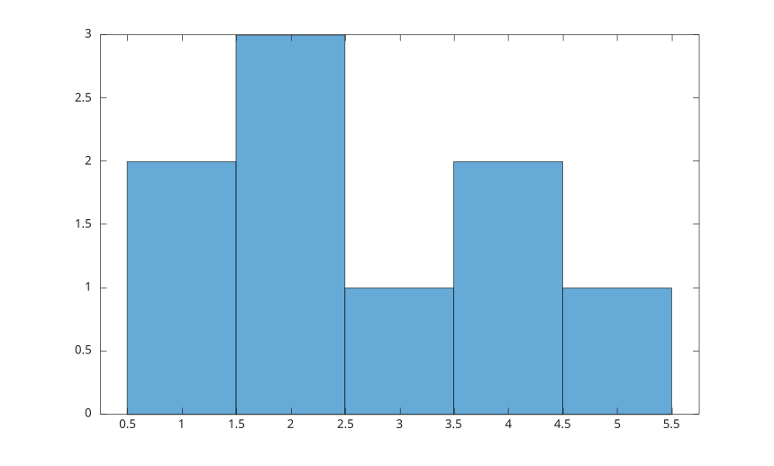
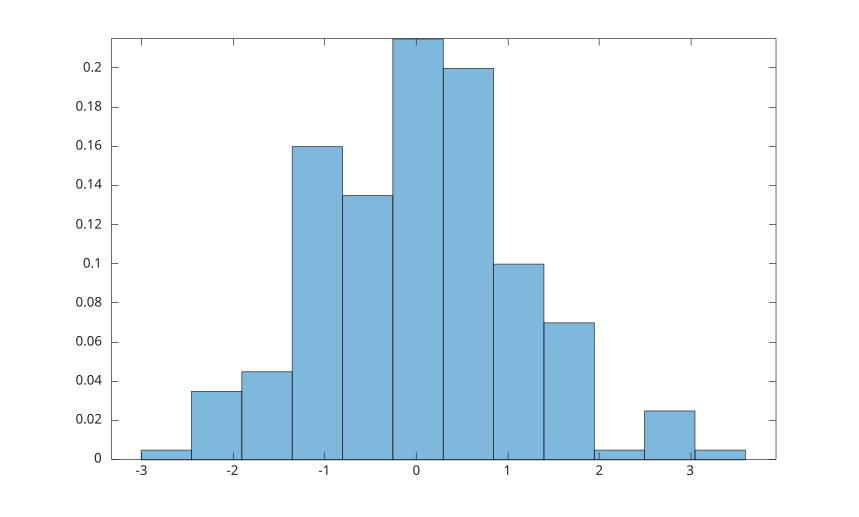
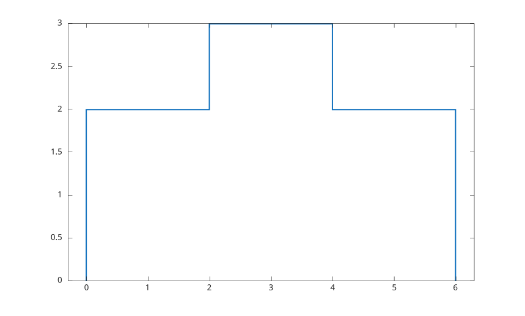
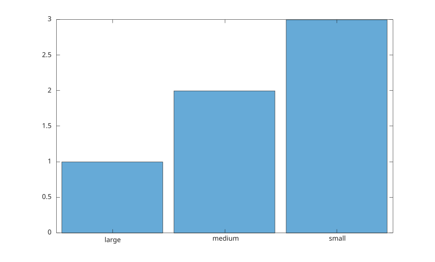

histogram(X)
histogram(X, nbins)
histogram(X, edges)
histogram(C)
histogram(C, categories)
histogram(..., propertyName, propertyValue)
histogram(ax, ...)
h = histogram(...)
| Paramètre | Description |
|---|---|
| X | données numériques. |
| nbins | nombre de classes. |
| edges | bornes de classes strictement croissantes. |
| C | données catégorielles. |
| categories | tableau de cellules de vecteurs de caractères ou tableau de chaînes sélectionnant les catégories à afficher et leur ordre. |
| propertyName | nom d'une propriété de l'objet histogramme. |
| propertyValue | valeur d'une propriété de l'objet histogramme. |
| ax | objet axes cible. |
| Paramètre | Description |
|---|---|
| h | objet graphique histogramme. |
histogram regroupe des données numériques en classes et affiche les valeurs sous forme de barres ou d'escaliers.
Lorsque C est un tableau catégoriel, histogram trace une barre par catégorie, dont la hauteur est le nombre d'éléments de cette catégorie. Les barres sont affichées dans l'ordre des catégories (celui renvoyé par categories) et les noms des catégories servent d'étiquettes de graduation. Un second argument peut indiquer les catégories à afficher et leur ordre.
Voir proprietes de histogram pour la liste complete des proprietes.
x = [1 1 2 2 2 3 4 4 5];
histogram(x);
x = randn(200, 1);
histogram(x, 12, 'Normalization', 'probability', 'FaceAlpha', 0.5);
x = [1 1 2 3 3 4 5];
h = histogram(x, [0 2 4 6], 'DisplayStyle', 'stairs');
h.LineWidth = 1.5;
C = categorical({'small', 'medium', 'large', 'small', 'medium', 'small'});
histogram(C);